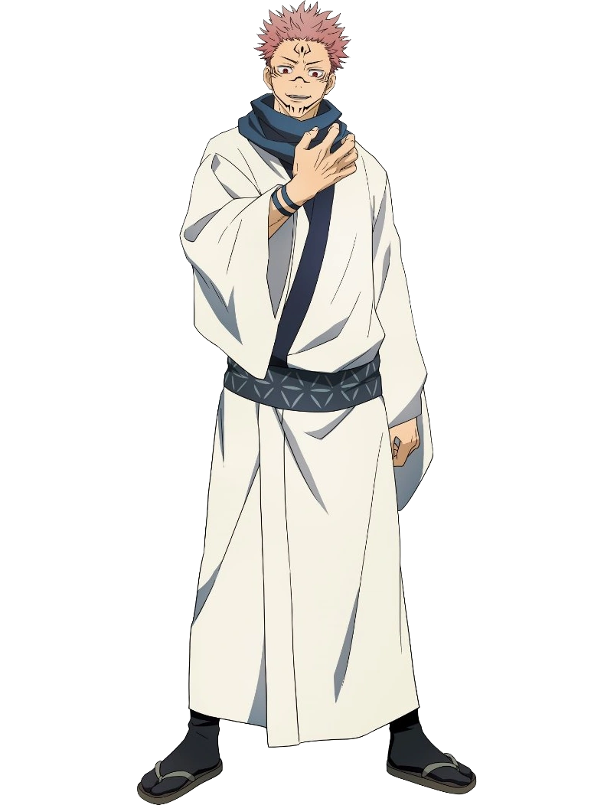
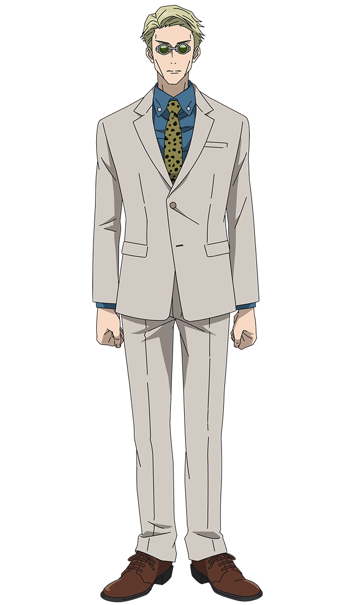
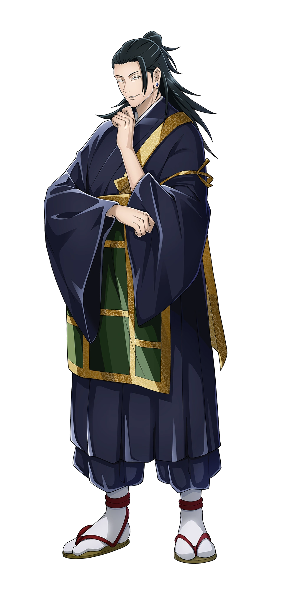

Jujutsu Kaisen é um anime cheio de personagens complexos e interessantes. Aqui estão alguns dos principais, com uma breve descrição:
Yuji Itadori
Um estudante do ensino médio que se torna o recipiente de Ryomen Sukuna, lutando para aceitar seu novo destino.
Megumi Fushiguro
Um feiticeiro jujutsu estratégico de uma família importante, conhecido por seu forte senso de justiça.
Nobara Kugisaki
Uma feiticeira jujutsu confiante que usa ferramentas de encantamento em combate, leal a seus amigos.
Satoru Gojo
Um dos feiticeiros mais poderosos, professor excêntrico de Yuji, Megumi e Nobara.
Ryomen Sukuna
O principal antagonista, um dos Reis das Maldições, que luta pelo controle do corpo de Yuji.
Kento Nanami
Um feiticeiro jujutsu de nível 1 e mentor de Yuji, conhecido por sua calma e racionalidade.
Shoko Ieiri
A médica da escola de feitiçaria de Tóquio, amiga de Gojo e com papel importante na história.
Maki Zenin
A irmã de Megumi, uma feiticeira jujutsu forte e independente, nasceu sem energia amaldiçoada.

Toji Fushiguro
Pai de Megumi, ex-feiticeiro conhecido como o "Assassino de Feiticeiros", um personagem misterioso.
Geto Suguru
Um ex-amigo de Gojo, principal antagonista que busca um novo equilíbrio no mundo.
Observação: Esta lista inclui apenas alguns dos personagens principais e pode não ser exaustiva. A série apresenta uma grande variedade de personagens com histórias e habilidades únicas.